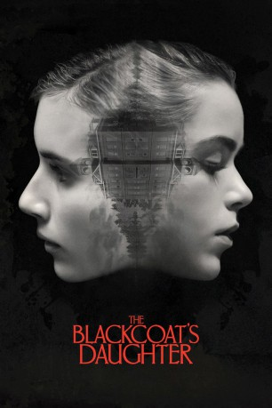

#7668 Die Tochter des Teufels
Alternativ: The Blackcoat's Daughter (Englischer Titel)
 
 IMDB-Wertung: 5.8 / 10
IMDB-Wertung: 5.8 / 10  Metascore: 0
Metascore: 0 
Two Catholic schoolgirls Kat (Kiernan Shipka) and Rose (Lucy Boynton) get left behind at their boarding school over winter break as the other girls leave, where it's rumored that the nuns are satanists. Meanwhile, a disturbed mental patient Joan (Emma Roberts), an escapee, is picked up by an elderly couple (James Remar and Lauren Holly) who drive her on a determined trip to the same school, where the girls must face the supernatural and demonic possession.
Jahr: 2015
Dauer: 94 Minuten
FSK: 16
Land: Kanada Studio: A24Tonspuren: DTS - ,
Untertitel:
Auflösung: 1080p (1920x1040) Größe: 3543 MB
Genre: Thriller, Horror
Regisseur: Oz Perkins
Drehbuch: Oz Perkins
Soundtrack:
Darsteller:
 Emma Roberts als Joan
Emma Roberts als Joan Kiernan Shipka als Kat
Kiernan Shipka als Kat Lucy Boynton als Rose
Lucy Boynton als Rose James Remar als Bill
James Remar als Bill Lauren Holly als Linda
Lauren Holly als Linda- Elana Krausz als Ms. Prescott
- Heather Tod Mitchell als Mrs. Drake
- Emma Holzer als Lizzy
- Peter J. Gray als Rick
 Matthew Stefiuk als Ranger
Matthew Stefiuk als Ranger- Ronda Louis-Jeune als Waitress
- Tori Barban als Private School Student , uncredited
- Veronica Cormier als Private School Student , uncredited
- Douglas Kidd als Kat's Dad , uncredited
- Jodi Larratt als Kat's Mom , uncredited
- Megan Weckwerth als Uniformed Girl , uncredited
- Katelyn Wells als Student , uncredited
- Greg Ellwand als Father Brian
- Peter James Haworth als Mr. Gordon
- Rose Gagnon als Dawn the Secretary
- Cameron Preyde als Nettle Ned
- Myranda Bingham als Contortionist
- Stephen K. Donnelly als Security Guard , uncredited
- Trevor Goulet als Photographer , uncredited
- Hallie Green als Private School Student , uncredited
- Aileigh Karson als Private School Student , uncredited
- Ilish Karson als Private School Student , uncredited
- Donna St-Jean als Hostess , uncredited
Datei: X:\2015(N-Z)\Tochter des Teufels, Die (2015, FSK16, 1920x1040).mkv seit 29.11.2017
Festplatte: HD 2015(A-Z)
 Es gibt insgesamt 161 Filme in der Gruppe '2015(N-Z)'
Es gibt insgesamt 161 Filme in der Gruppe '2015(N-Z)'